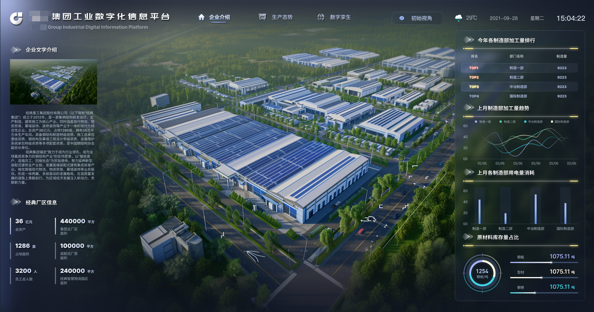
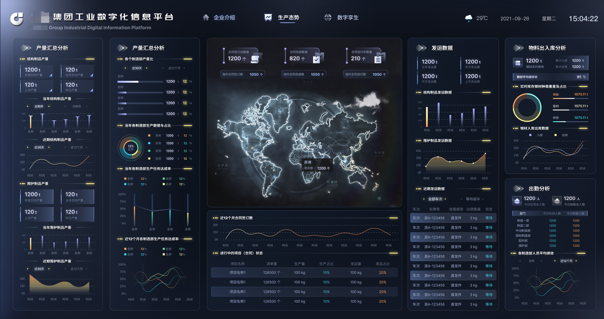
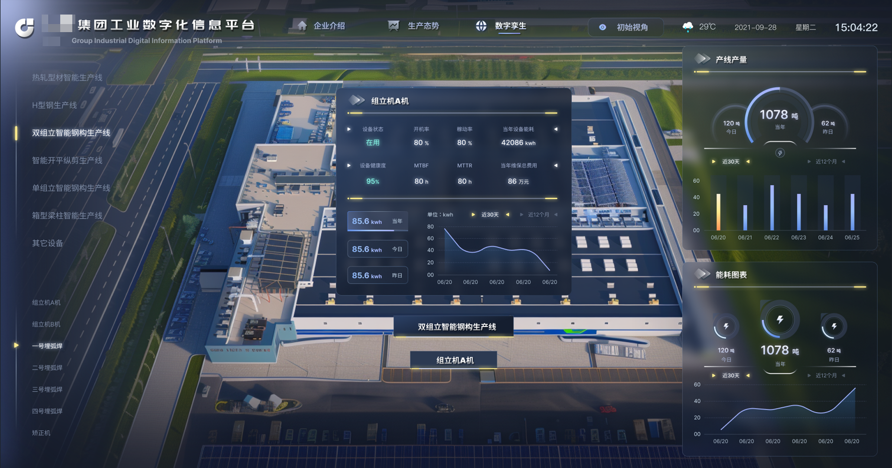
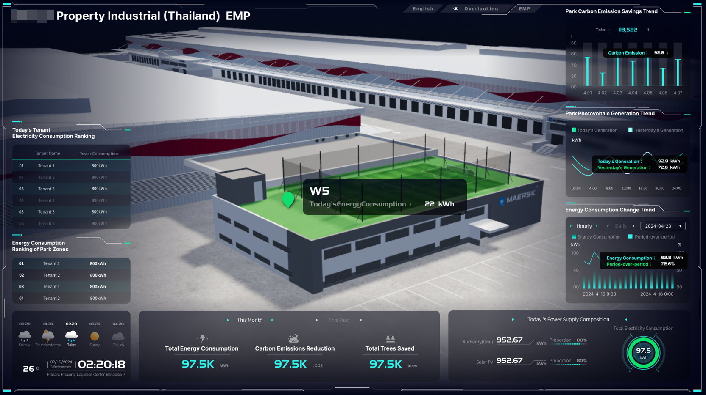
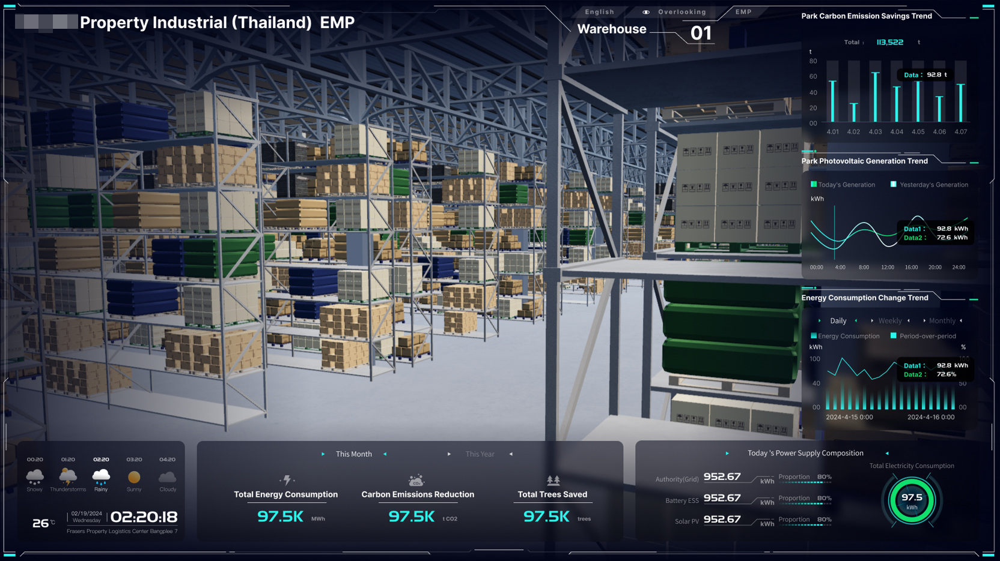
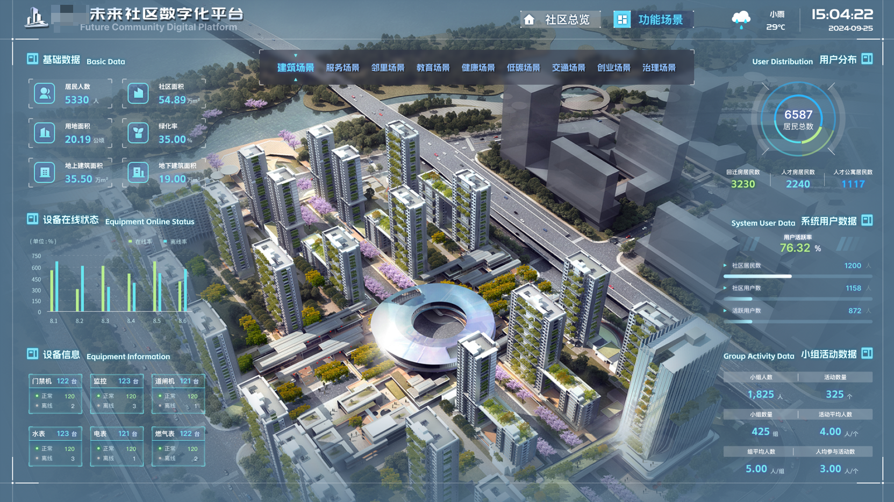
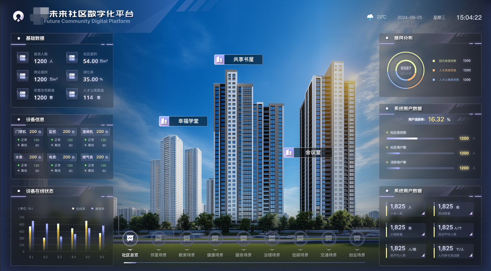

需求与交付现场经验
做过 ToB 软件项目交付、ERP 实施和集团级可视化项目，熟悉需求调研、会议纪要、任务拆解、研发协同与验收交付。
Hands-on experience with customer discovery, requirement alignment, delivery coordination, and acceptance.
AI Product Workflow Notes
一些关于需求、反馈、业务流程和 AI 工具如何转化为产品工作的实践整理。我的经验来自 ToB 项目交付、 ERP 实施、可视化项目管理，以及一次跨境电商业务自动化实践。
Working principles
AI PM tools should not only write documents. The stronger value is helping product teams collect signals, organize context, and decide what should happen next.
做过 ToB 软件项目交付、ERP 实施和集团级可视化项目，熟悉需求调研、会议纪要、任务拆解、研发协同与验收交付。
Hands-on experience with customer discovery, requirement alignment, delivery coordination, and acceptance.
创业期间参与 Ozon 跨境电商从 0 到 1，基于真实业务需求自研 ERP 自动化工具，把批量上品、店铺管理等重复流程系统化。
Turned repetitive business operations into ERP automation and reusable workflows.
高频使用 Claude、Codex、Gemini 等工具做需求拆解、资料整理、竞品研究、流程设计、文档输出和辅助开发。
Practical AI-assisted product work: analysis, documentation, workflow design, and development support.
Product understanding
产品经理真正困难的地方，不是“写一份文档”，而是持续从会议、客户反馈、竞品变化、项目状态和 OKR 中判断什么值得推进。 AI PM 工具应该减少信息搬运，让 PM 更早看到风险、重复需求和优先级信号。
Project evidence
Screenshots are anonymized. My role focused on requirement alignment, project coordination, delivery tracking, and cross-functional communication.
Industrial digital platform
涉及企业介绍、生产态势、数字孪生、产线、设备、能耗、库存、发运等模块，核心挑战是把多角色、多数据源和多层级业务视图统一成可交付看板。
A group-level industrial dashboard connecting production, equipment, energy, inventory, and shipment views.



Energy management / English UI
英文界面项目，覆盖园区总览、租户侧视图、仓储、能耗、碳排、光伏发电等信息，体现跨场景 B 端可视化和国际化界面交付经验。
Energy and carbon dashboards for park, tenant, warehouse, photovoltaic, and consumption scenarios.


Community digital platform
覆盖基础数据、设备在线状态、居民分布、系统用户、活动数据与多功能场景，重点在于把社区治理与服务场景拆成清晰的信息层级。
A future community dashboard organizing building, service, education, health, low-carbon, traffic, and governance scenarios.


Case study
在 Ozon 跨境电商创业中，我亲自参与店铺、选品、采购、物流、售后等流程。随着多店铺矩阵和高频上品带来重复操作， 我梳理平台规则和 API 工作流，将批量上品、店铺管理等高频任务转化为内部 ERP 自动化能力。
This is the same pattern I see in AI PM tooling: scattered operational signals become structured workflows, then become reusable product capabilities.
Reusable workflow
梳理产品经理在会议、客户反馈、竞品监控、PRD、Roadmap 中的真实工作流和痛点。
把零散输入转成需求池、优先级、用户故事、验收标准和可执行任务。
用 Claude、Codex、Gemini 等 AI 工具提高需求分析、文档输出、竞品研究和原型验证效率。
配合研发、设计、运营团队，把产品方案拆成清晰边界、节奏和交付标准。
Contact
Resume PDF is included here for context. I am available for product or project roles around AI workflow, ToB delivery, and business systems.
More writing and project notes: xxxyouthxxx-github-io.vercel.app